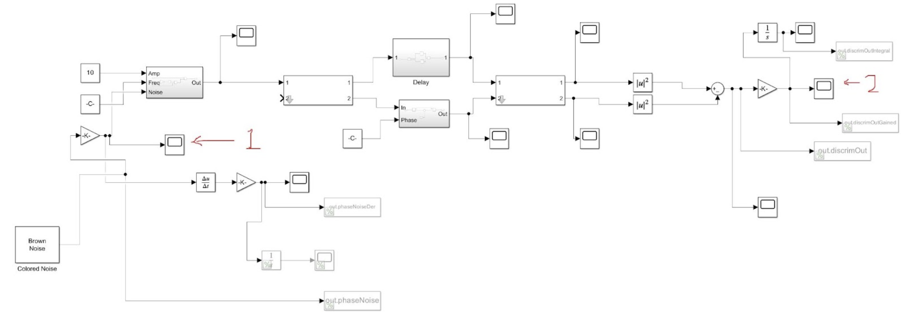
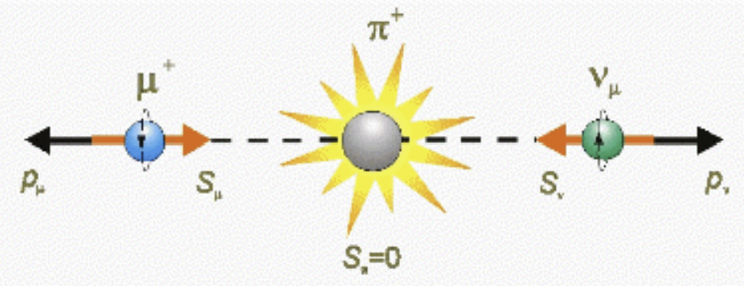
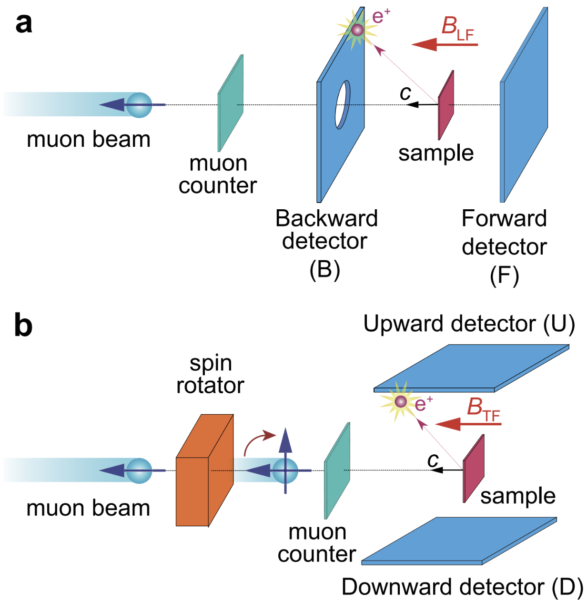

I am currently working on two projects. The first project involves simulating and then building and testing a frequency noise discriminator circuit utilizing an MZI (Mach-Zehnder interferometer). An MZI frequency noise discriminator circuit is used to detect and quantify frequency noise in optical communication and sensing systems. It works by splitting a coherent light source into two paths, allowing them to travel different lengths or undergo different phase modulations, and then recombining them to create an interference pattern. Frequency noise in the light source causes variations in the phase difference between the two paths, which results in changes in the interference pattern's intensity. Photodetectors measure these intensity variations, and signal processing techniques are used to analyze and quantify the noise. This method is crucial for improving the performance and precision of optical systems by mitigating the effects of frequency noise. The circuit schematic for the frequency noise discriminator circuit in Simulink is shown below (the numbers 1 and 2 in red are used to show the input and output measurements, respectively):
The second project involves creating several programs in MATLAB dealing with the relationship between the Frequency Noise PSD of a laser and its lineshape. The Frequency Noise PSD describes the power spectrum of the noise within a laser as a function of frequency, while the lineshape of a laser shows the intensity of the output laser as a function of frequency and is thus a good metric for measuring the quality of the laser. An algorithm exists that, given the Frequency Noise PSD of a laser, can calculate the lineshape of the laser. The algorithm is as follows; given the Frequency Noise PSD of a laser, \(S_{\delta \nu}(f)\), of the laser lightfield:
\(E(t)=E_0e^{i(2\pi \nu_0 t +\phi (t))}e^\)
where \(\nu_0\) is the carrier frequency, \(\phi (t)\) is the phase noise, and \(E_0\) is the amplitude, we can find the autocorrelation function of the lightfield, \(\Gamma (\tau) = E^{*}(t)E(t+\tau)\). The explicit expression of the autocorrelation function is:
\( \Gamma_E(\tau) = E_0^2 e^{i 2 \pi \nu_0 \tau} e^{-2 \int_{0}^{\infty} S_{\delta \nu}(f) \frac{\sin^2(\pi f \tau)}{f^2} \, df} \)
In the summer of 2022, I was performing research in the field of \(\mu \)SR (muon Spin Resonance) in the CMMS (Centre for Molecular and Material Science) at TRIUMF. Before I delve directly into what \(\mu \)SR is, it is important to introduce what muons are and how we generate them.
Muons are elementary particles similar to electrons (same spin and charge) but with a mass roughly 207 times as large. To generate muons in a lab, we need to first generate pions, a type of meson composed of a quark and an antiquark. We do this by firing a proton beam at a target usually made of graphite or beryllium.
\(p+p \rightarrow p+n+\pi^+\)
\(p+n \rightarrow n+n+\pi^+\)
Because pions are an unstable particle, a charged pion has a mean lifetime of about \(\tau = 26\text{ ns}\) and will decay into an antimuon (a positively charged muon) and a neutrino:
\(\pi^+ \rightarrow \mu^+ + \nu_\mu\)
Here is the interesting part. So far, only left-handed neutrinos (neutrinos with a spin antiparallel to their linear momentum) exist. We also know that pions have no spin. Therefore, due to conservation of momentum, both the antimuon and neutrino are produced with a spin antiparallel to their linear momentum in the pion rest frame. A diagram of such a process is shown below:
Once we have our antimuons, we can use them to perform mu-SR. The essence of mu-SR is that we take a sample (usually made of aluminium, carbon, or silver) and bombard it with the generated antimuons. The antimuons will then stop in the sample and precess about the local magnetic field. The precession frequency is given by:
\(\omega = \gamma B\)
where \(\gamma \) is the gyromagnetic ratio of the muon and \(B\) is the local magnetic field. By measuring the time evolution of the antimuon polarization, we can extract information about the local magnetic field at the sample. This is useful for studying magnetic materials and understanding the magnetic properties of materials.
However, the process does not end there. Antimuons have a mean lifetime of \(\tau = 2.2\text{\mu s}\) and will eventually decay into a positron, an electron neutrino, and a muon antineutrino:
\(\mu^+ \rightarrow e^+ + \nu_e + \bar{\nu}_\mu\)
The bulk of my research involved using G4beamline for designing and simulating a variety of detector setups for the \(\mu \)SR experiment and then eventually testing them. The detector setups consisted of a series of photomultiplier tubes (PMTs) and scintillators that would detect the positrons emitted from the antimuon decay. We would detect both the time and position of the positron emission in order to learn more about the antimuon decay process, as well as the spin precession of the antimuons. A conceptual example of a detector setup is shown below:
Here is a link for my interview with TRIUMF: TRIUMF Interview
From the summer of 2021 to February of 2024, I was part of UBC Orbit, a student design team at UBC dedicated to designing and developing satellites. Specifically, I worked on a project called ALEASAT, a collaboration with SFU (Simon Fraser University) and UBC Orbit to develop a 1U CubeSat (a small satellite that is 10 cm x 10 cm x 10 cm) that would provide on-demand images of Earth to amateur radio operators. During my time at UBC Orbit, I worked in three different sub-teams; Orbital determination, Command and Data Handling, and Attitude Determination and Control Systems.
(1.A) The first project that I worked on while on the Orbital Determination sub-team was to write a report to the Canadian government in order to prove that our CubeSat would decay back to Earth within 25 years. Using STK (Systems Tool Kit), I simulated the orbit of our CubeSat in a variety of different circumstances taking into account the altitude, weight, dimensions, and drag coefficient of the CubeSat as well as the atmospheric and solar models and orbital propagator of the CubeSat. With another team member who performed the simulations using GMAT (General Mission Analysis Tool), we recorded the results and submitted them to the Canadian government for approval, which we received.
(1.B) After working on the report, I also contributed to the development of a program that would be used to predict the orbit of the satellite using TLE (Two Line Element) data provided by the Canadian government. The final result was a Python program that, when given the altitude, latitude, longitude, and time of two points of a satellite's orbit, used the TLE data of the satellite to predict the position of the satellite sometime in the future within an accuracy of 10 km or below. As long as the TLE was updated every few weeks (two weeks was recommended to be safe), the program did not produce a large error. Prior to the development of the final program, I created several trial programs in MATLAB to test various orbital algorithms in order to find the optimal algorithm. For the final program, I read parts of several Masters theses and often consulted an orbital mechanics textbook for reference (the textbook that I used was Orbital Mechanics for Engineering Students by Howard D. Curtis) where I learned about fascinating concepts such as Gibbs' method and Lambert's theorem (both in Ch.5).
(2) After working in the orbital determination team, I briefly switched to the Command and Data Handling sub-team. I contributed to the development of a program used to monitor the vitals of the satellite. This program would be used to check the temperature and battery levels of the satellite and would provide alerts if any of these values were beyond the accepted range.
(3) The final team that I worked on was in the Attitude Determination and Control System (ADCS) sub-team, which was my personal favourite due to physics and experimental nature of the work as well as the collaboration involved. The first task that I worked on was contributing to the development, building, and testing of a Helmhlotz cage for our satellite. For reference, a Helmholtz coil is a pair of electromagnets on the same axis each with identical currents (same magnitude and direction) separated by a distance of \(R\) where \(R\) is the radius of the coil. A Helmholtz cage is a device that utilizes three pairs of Helmholtz coils to generate a magnetic field that is uniform in the center of the cage. This magnetic field is used to simulate the Earth's magnetic field in order to test the magnetorquers, devices which are used to control the orientation of the CubeSat.